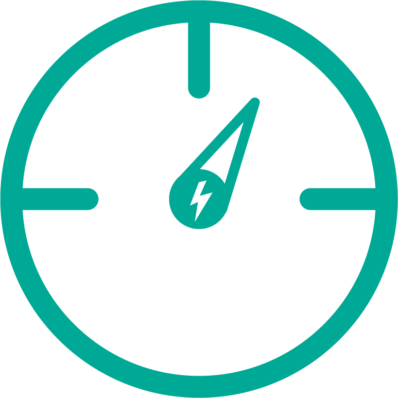
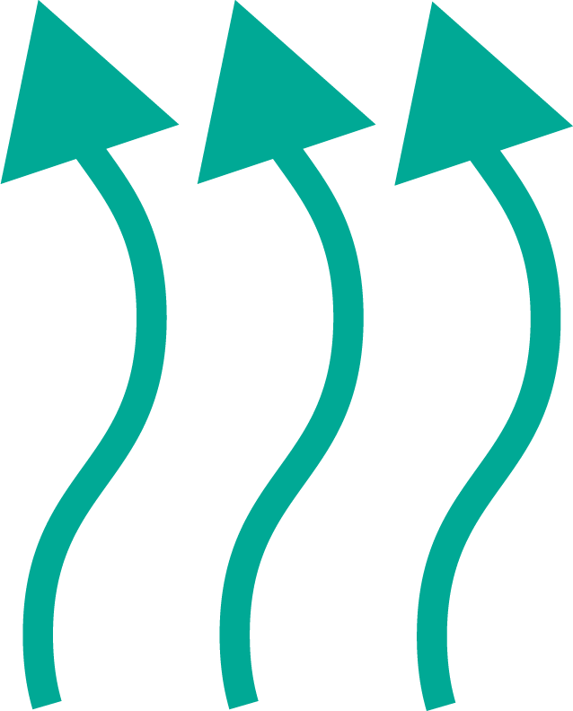
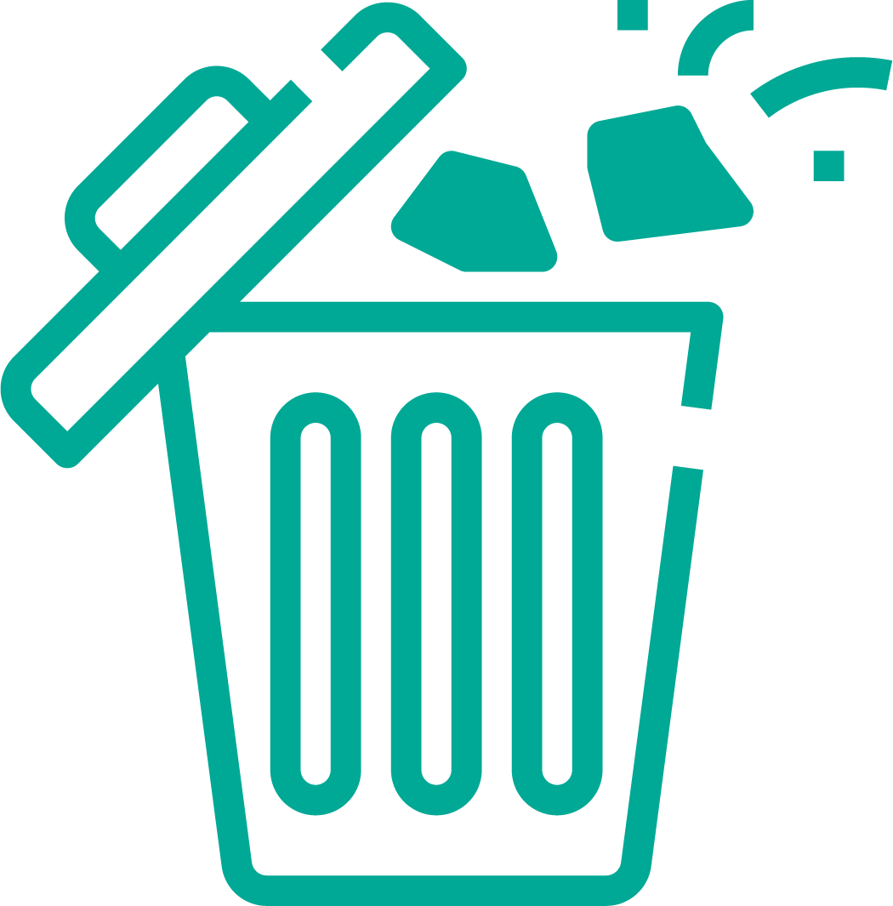

Energy Types We Monitor

Electricity

Gas

Thermal

Diesel

Get real-time visibility into utility and sub-meter data.
Metering can be used to provide energy costs, carbon usage information or general excess usage costs that can be used to manage operations.
Use the system to monitor building or tenant utility consumption or generation such as solar.
The Dreams Network & Technology metering system allows all utilities to be reported in a common format which can further be automated to provide regular reports for individual meters (tenant) or groups of meters (building).
The automatic meter reporting can be output in CSV, PDF or emailed.
Meter readings can be further utilized in the tenant billing system.
View an Example